중간고사: 정답
※ 총 \(65\) 문항이며(소문항은 각각 한 문항으로 센다), 문항별 배점은 모두 같다. \(65\) 점 만점이다.
※ “모두 고르라”는 문항은 올바른 것이 하나도 없을 수도 있다. 그때는 “없음”이라고 쓴다.
※ 꼭 그런 것은 아니지만, 보기가 긴 경우가 정답인 경우가 있다. 답 자리가 ①에 몰려 있는 경우가 많다.
문제1
어떤 사진을 보고 세 사람이 다음과 같이 말하였다.
- (가) 한 남자가 공원에서 빨간 자전거를 타고 있다.
- (나) 한 남자가 자전거를 타고 있다.
- (다) 사람이 자전거를 타고 있다.
세 진술이 참일 확률에 대하여 올바른 것을 모두 고르라.
① 사진을 가장 자세히 설명한 진술은 (가) 이므로, 참일 확률이 가장 큰 진술도 (가) 이다.
② (다) 는 너무 막연한 진술이므로, 참일 확률이 가장 작다.
③ 세 진술은 모두 같은 사진을 말하므로, 참일 확률이 모두 같다.
없음
문제2
공평한 동전을 던져 앞면이 나오면 \(0\), 뒷면이 나오면 \(1\) 을 적기로 하고, 이 동전을 \(5\) 번 던져 \(0,\ 1,\ 0,\ 0,\ 1\) 을 얻었다. 다음 물음에 답하라.
(1) 누군가 “평균은 얼마인가?” 하고 물었다. 이 물음은 두 가지 뜻으로 읽을 수 있다. 두 뜻을 각각 쓰고, 그때의 답을 구하라.
모평균(동전을 한 번 던진 결과의 평균) \(\frac{1}{2}\) · 표본평균(얻은 다섯 값의 평균) \(\frac{2}{5}\)
(2) 다음 두 주장이 참인지 거짓인지 판단하라.
① 다섯 값의 평균이 \(\frac{1}{2}\) 이 아니므로, 이 동전이 공평하다는 가정은 틀렸다.
② 동전을 \(5\) 번 더 던지면, (1)에서 구한 두 답이 모두 바뀔 수 있다.
① 거짓 · ② 거짓
문제3
어떤 후보를 지지하는 유권자의 비율을 알아보려고 유권자 \(100\) 명에게 물었더니 \(40\) 명이 지지한다고 답하였다. 전체 유권자 가운데 지지자의 비율을 \(p\), 물어본 \(100\) 명 가운데 지지자의 비율을 \(\bar{x}\) 라 하자. 이번 조사에서 \(\bar{x}\) 는 \(0.40\) 으로 실현되었다. 이 조사를 두고 누군가 “지지율이 \(0.35\) 와 \(0.45\) 사이일 확률은 얼마인가?” 하고 물었다. 올바른 것을 모두 고르라.
① 이번 조사에서 \(\bar{x}\) 가 이미 \(0.40\) 으로 실현되었으므로, \(p\) 가 \(0.35\) 와 \(0.45\) 사이일 확률은 \(1\) 이다.
② 이 물음이 “\(100\) 명을 다시 뽑을 때 \(\bar{x}\) 가 \(0.35\) 와 \(0.45\) 사이의 값으로 실현될 확률” 이라는 의미라고 한다면, 말이 된다.
③ ’지지율’이 \(p\) 를 뜻한다면, \(p\) 는 모수이고 모수에는 확률을 줄 수 없으므로 이 물음의 ’확률’은 어색하다.
④ ’지지율’을 \(p\) 로 읽든 \(\bar{x}\) 로 읽든 같은 낱말이므로, 이 물음이 말이 되는지는 달라지지 않는다.
② · ③
문제4
다음 글을 읽고 물음에 답하라.
통계학을 두 세계의 이야기로 비유할 수 있다. 하나는 우리가 알고 싶지만 직접 볼 수는 없는 ’진실의 세계’이고, 다른 하나는 우리가 실제로 손에 쥐는 ’데이터의 세계’이다. 피셔는 1922년 논문에서, 우리가 얻은 관측값을 ’가설적 무한 모집단’에서 뽑은 표본으로 보자고 하였다. 이 비유로 말하면, 1이 나올 비율이 \(p\) 인 가설적 무한 모집단은 진실의 세계에 있고, 그 모집단에서 실제로 뽑은 표본은 데이터의 세계에 있다. \(n\) 개를 뽑아 1이 \(x\) 개 나왔다면 \(x\) 와 \(\frac{x}{n}\) 은 데이터의 세계의 값이다. 표본을 새로 뽑을 때마다 달라지는 것은 진실의 세계의 \(p\) 가 아니라 데이터의 세계 쪽이다. 같은 논문에서 피셔는, 최대가능도방법을 처음 내놓은 1912년 논문에서 \(p\) 의 한 값이 다른 값보다 몇 배의 ’역확률’을 가진다고 말했던 것을 돌아보며 이렇게 썼다.
Upon consideration, therefore, I perceive that the word probability is wrongly used in such a connection : probability is a ratio of frequencies, and about the frequencies of such values we can know nothing whatever.
(그러므로 곰곰이 생각해 보니, 그런 맥락에서 확률이라는 낱말은 잘못 쓰였음을 알겠다. 확률은 도수의 비인데, ㉠그러한 값들의 도수에 대해서 우리는 아무것도 알 수 없다.) — Fisher (1922), p.326 (간접인용)
여기서 ’그러한 값들’은 모수 \(p\) 가 가질 수 있는 값들을 뜻한다.
밑줄 친 ㉠에 대한 이해로 올바른 것을 모두 고르라.
① ㉠은 표본에서 계산한 비율 \(\frac{x}{n}\) 이 표본마다 달라지므로, \(\frac{x}{n}\) 의 도수를 알 수 없다는 뜻이다.
② ㉠은, \(p\) 도 \(x\) 처럼 표본을 새로 뽑을 때마다 달라지므로 그 값들의 도수를 미리 알 수 없다는 데서 나온다.
③ ㉠은, 표본을 아무리 되풀이해 뽑아도 그에 따라 달라지는 것은 \(x\) 이지 \(p\) 가 아니라는 데서 나온다.
④ 표본을 아주 크게 하면 \(\frac{x}{n}\) 이 곧 \(p\) 가 되므로, \(p\) 가 가질 수 있는 값들의 도수도 알 수 있게 되어 ㉠의 어려움은 사라진다.
③
문제5
다음 글을 읽고 물음에 답하라.
자료를 오래 들여다보면 “이 수들은 이러이러한 규칙에서 나온 것 같다” 는 생각이 든다. 이처럼 자료가 만들어지는 규칙을 거꾸로 상상하는 일을 모델링이라 한다. 예컨대 관측한 \(n\) 개의 값이 정규분포에서 나왔다고 상상하면, 그것은 \(X_1,\dots,X_n \overset{i.i.d.}{\sim} N(\mu,\sigma^2)\) 으로 모델링한 것이다. 상상한 규칙이 실제 규칙과 같다는 보장은 없다. 같은 자료를 보고 다른 사람은 다른 규칙을 상상할 수 있으며, 그 또한 모델링이다.
상상한 규칙에는 아직 정해지지 않은 수가 남는다. 정규분포라면 \(\mu\) 와 \(\sigma^2\) 이다. 이처럼 분포를 특정하는 데 필요한 수를 모수라 하고, 자료를 써서 모수의 값을 구체적으로 정하는 일을 모수추정이라 한다.
(1) 윗글에 비추어, 다음 가운데 모델링의 예가 아닌 것을 모두 고르라.
① 카페 주인이 온도와 아이스아메리카노 판매량 자료를 보고, 판매량이 \(y_i=\beta_0+\beta_1x_i+\epsilon_i\), \(\epsilon_i\sim N(0,\sigma^2)\) 의 꼴로 만들어졌다고 상상하였다. (\(x_i\) 는 온도)
② 숫자 \(8\) 개를 보고, 이 숫자들이 \(N(\mu,\sigma^2)\) 에서 독립으로 나왔다고 상상하였다. (사실 이 숫자들은 균등분포에서 만든 것이다.)
③ 이미 세워 둔 꼴 \(y_i=\beta_0+\beta_1x_i+\epsilon_i\) 에서, 자료로 \(\beta_0\) 와 \(\beta_1\) 의 값을 구체적으로 정하였다.
④ \(100\) 명의 스펙과 취업 여부 자료를 보고, 취업 여부가 \(Bernoulli(\pi_i)\), \(\pi_i=\frac{\exp(\beta_0+\beta_1x_i)}{1+\exp(\beta_0+\beta_1x_i)}\) 를 따른다고 상상하였다. (\(x_i\) 는 스펙)
③
(2) 어떤 자료 \(30\) 개의 평균, 표준편차, 최솟값, 최댓값을 계산하였더니 아래와 같았다.
| 평균 | 표준편차 | 최솟값 | 최댓값 |
|---|---|---|---|
| \(20.13\) | \(2.95\) | \(14.62\) | \(26.40\) |
윗글에 비추어 올바른 것을 모두 고르라.
① 표의 평균과 표준편차는 자료에서 계산한 값이므로 모수가 아니다.
② 이 자료를 \(U(a,b)\) 로 모델링하면, 표의 최솟값과 최댓값이 곧 모수 \(a\) 와 \(b\) 이다.
③ 이 자료를 두고 한 사람은 균등분포 \(U(a,b)\) 에서, 다른 사람은 정규분포 \(N(\mu,\sigma^2)\) 에서 나왔다고 상상하였다면, 두 사람 모두 모델링을 한 것이다.
④ \(U(a,b)\) 의 \(a\) 와 \(b\) 를 자료로 정하는 것을 모수추정이라 한다.
① · ③ · ④
문제6
다음 글을 읽고 물음에 답하라.
자료를 보고 그 자료가 만들어진 규칙을 상상하는 일을 모델링이라 한다. 같은 숫자들을 보고 누군가는 균등분포를, 누군가는 정규분포를 상상할 수 있다. 그런데 현실에서는 많은 경우 자료를 만든 규칙을 끝내 알 수 없으므로, 올바른 모델링이란 거의 불가능하다. 그래서 올바른 모델을 찾으려 애쓰기보다 쓸모 있는 모델을 찾으려 애쓰는 편이 더 의미 있는 경우가 많다. 통계학자 조지 박스는 이렇게 적었다.
All models are wrong, but some are useful.
(모든 모델은 틀렸다. 그러나 몇 개는 쓸모 있다.) — George Box
〈보기〉
어느 과수원의 사과 무게(g)를 두고, 자료를 모으기 전에 “무게가 어떤 구간 안에서 고르게 퍼져 있다”는 균등분포 모델과 “무게가 정규분포를 따른다”는 정규분포 모델이 제안되었다.
(1) 도수분포표를 보기 전, 윗글을 바탕으로 〈보기〉의 두 모델을 판단한 것으로 올바른 것을 모두 고르라.
① 두 모델 가운데 적어도 하나는 사과 무게를 만든 실제 규칙과 꼭 같다.
② 정규분포 모델이든 균등분포 모델이든 실제 규칙과 꼭 같지는 않을 것이므로, 두 모델은 모두 쓸모가 없다.
③ 두 모델은 서로 다른 분포를 상상했으므로, 둘 가운데 하나만 올바른 모델링이라 할 수 있다.
없음
(2) 그 뒤 사과 \(40\) 개의 무게를 재어 도수분포표를 만들었더니 아래와 같았다.
| 무게(g) | \([250,270)\) | \([270,290)\) | \([290,310)\) | \([310,330)\) | \([330,350)\) | \([350,370)\) |
|---|---|---|---|---|---|---|
| 개수 | \(2\) | \(6\) | \(13\) | \(11\) | \(6\) | \(2\) |
이 도수분포표를 본 뒤, 윗글을 바탕으로 두 모델을 판단한 것으로 올바른 것을 모두 고르라.
① 균등분포 모델이 맞다면 여섯 구간에 엇비슷한 개수가 들어가야 하는데, 가운데 두 구간에 \(24\) 개가 몰리고 양 끝 구간에는 \(2\) 개씩뿐이다. 그러므로 이 자료에 균등분포 모델은 쓸모 있는 모델로 보기 어렵다.
② 이 표를 막대그래프로 그리면 가운데가 높고 양쪽이 엇비슷하게 낮아지는 종 모양이 된다. 그러므로 사과 무게는 무조건 정규분포를 따른다.
③ 이 표만으로 사과 무게가 정규분포를 따른다고 확정할 수는 없지만, 이 자료에는 정규분포 모델이 균등분포 모델보다 쓸모 있어 보인다.
① · ③
문제7
앞면이 나올 확률이 \(\theta\) 인 동전을 두 번 던져 앞면은 \(1\), 뒷면은 \(0\) 으로 적었더니 아래와 같았다. 다음 물음에 답하라.
\[x_1=0,\qquad x_2=1\]
(1) \(\theta=0.1\) 이라고 생각하기보다 \(\theta=0.5\) 라고 생각하는 것이 더 타당하다. 그 까닭으로 올바른 것을 모두 고르라.
① 동전이니까 앞면이 나올 확률은 당연히 반반, 즉 \(\theta=0.5\) 이다.
② \(\theta=0.5\) 이면 이 결과를 얻을 확률은 \(0.5\times0.5=0.25\) 이고, \(\theta=0.1\) 이면 \(0.9\times0.1=0.09\) 이다. 즉 \(L(0.5)>L(0.1)\) 이다.
③ 두 번 가운데 한 번 앞면이 나왔으므로, \(\theta\) 는 정확히 \(0.5\) 이다.
②
(2) 갑은 아래와 같이 말하였다.
\[P(\theta=0.5)=0.25,\qquad P(\theta=0.1)=0.09\]
을은 다음과 같이 반박하였다.
〈을의 반박〉
갑의 말이 옳다면, 같은 방법으로
| \(\theta\) | \(0.3\) | \(0.4\) | \(0.5\) | \(0.6\) | \(0.7\) |
|---|---|---|---|---|---|
| \(P(\theta)\) | \(0.21\) | \(0.24\) | \(0.25\) | \(0.24\) | \(0.21\) |
이어야 한다. 그런데 이 다섯 값만 더해도
\[0.21+0.24+0.25+0.24+0.21=1.15>1\]
이다. 따라서 갑이 말한 값은 \(\theta\) 의 확률이 아니다.
을의 반박에 대하여 올바른 것을 모두 고르라.
① 을의 반박은 갑의 말이 옳다고 가정한 뒤 모순을 끌어내어 그 가정이 틀렸음을 보이는 것으로, 귀류법이다.
② 을의 반박대로라면 \(0.25\) 와 \(0.09\) 는 아무 뜻도 없는 수이므로, 두 수를 견주어 \(\theta=0.5\) 가 \(\theta=0.1\) 보다 그럴듯하다고 말할 수도 없다.
①
문제8
어떤 양 \(\theta\) 를 네 번 측정하여 아래 자료를 얻었다. 측정값은 \(X_1,\dots,X_4 \overset{i.i.d.}{\sim} N(\theta,1)\) 을 따른다고 하자.
\[x_1=0.8,\quad x_2=-0.3,\quad x_3=1.1,\quad x_4=0.6\]
두 사람이 \(\theta\) 를 다음과 같이 추정하였다.
- 갑: 표본평균 \(\hat{\theta}=\frac{X_1+X_2+X_3+X_4}{4}\) 로 추정한다. 이 자료에서는 \(\frac{0.8-0.3+1.1+0.6}{4}=0.55\) 이다.
- 을: 지난해 조사에서 \(\theta\) 가 \(0\) 근처였다는 것을 알고 있어서, 자료와 상관없이 \(\hat{\theta}=0\) 으로 추정한다.
두 추정량에 대한 설명으로 올바른 것을 모두 고르라.
① 을의 추정량은 \(\theta=0\) 일 때 \(\mathbb{E}[\hat{\theta}]=\theta\) 를 만족하므로 불편추정량이다.
② 갑의 추정량은 모든 \(\theta\) 에서 \(\mathbb{E}[\hat{\theta}]=\theta\) 를 만족하므로 불편추정량이다.
③ 이번 자료의 표본평균이 \(0\) 이었다면, 을의 추정량도 불편추정량이 된다.
④ 갑의 추정량이 불편추정량이라고 해서, 이번 자료로 얻은 추정값 \(0.55\) 가 \(\theta\) 와 같다는 뜻은 아니다.
② · ④
문제9
문제8 의 갑과 을이 저마다의 방법으로, 자료를 새로 얻어 \(\theta\) 를 추정하는 일을 여러 번 되풀이하였다. 아래는 그 추정값들을 과녁에 하나씩 찍을 때 나올 수 있는 네 가지 꼴이다. 과녁의 한가운데가 참값 \(\theta\) 이고, 점이 하나뿐인 그림은 추정값이 모두 같은 자리에 찍힌 것이다.
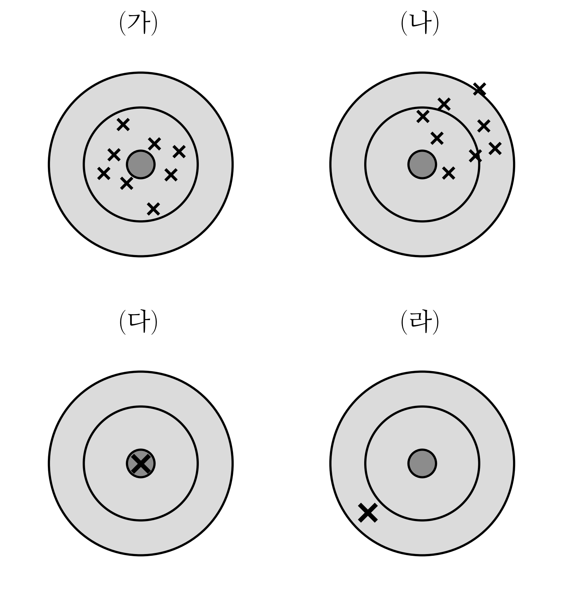
올바른 것을 모두 고르라.
① 갑의 추정값은 참값 \(\theta\) 가 무엇이든 (가) 의 꼴로 찍힌다.
② 갑의 추정값은 참값 \(\theta\) 가 무엇이든 (나) 의 꼴로 찍힌다.
③ 을의 추정값은 참값 \(\theta\) 에 따라 (가) 의 꼴로도, (나) 의 꼴로도 찍힐 수 있다.
④ 을의 추정값은 참값 \(\theta\) 에 따라 (다) 의 꼴로도, (라) 의 꼴로도 찍힐 수 있다.
⑤ 갑의 추정값은 참값 \(\theta\) 에 따라 (가) 의 꼴로도, (나) 의 꼴로도 찍힐 수 있다.
① · ④
문제10
앞면이 나올 확률이 \(\theta\) 인 동전을 던져 앞면을 \(1\), 뒷면을 \(0\) 으로 적는다. (\(X_1,\dots,X_n \overset{i.i.d.}{\sim} Ber(\theta)\)) 다음 물음에 답하라.
(1) 다섯 번 던져 \(1,\ 0,\ 0,\ 1,\ 0\) 을 얻었다. 가능도함수 \(L(\theta)\) 의 그래프로 알맞은 것을 고르라.
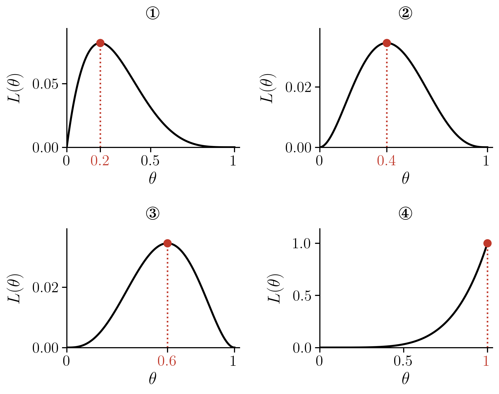
②
(2) 네 번 던져 \(0,\ 1,\ 0,\ 0\) 을 얻었다. 두 학생이 가능도 \(L(\theta)\) 를 계산하여 아래 표 (가), (나) 를 만들었다. 바르게 계산한 표를 고르라.
(가)
| \(\theta\) | \(0\) | \(\frac{1}{4}\) | \(\frac{2}{4}\) | \(\frac{3}{4}\) | \(1\) |
|---|---|---|---|---|---|
| \(L(\theta)\) | \(0\) | \(\left(\frac{1}{4}\right)\left(\frac{3}{4}\right)^3\approx0.1055\) | \(\left(\frac{2}{4}\right)^4=0.0625\) | \(\left(\frac{3}{4}\right)\left(\frac{1}{4}\right)^3\approx0.0117\) | \(0\) |
(나)
| \(\theta\) | \(0\) | \(\frac{1}{4}\) | \(\frac{2}{4}\) | \(\frac{3}{4}\) | \(1\) |
|---|---|---|---|---|---|
| \(L(\theta)\) | \(0\) | \(\left(\frac{1}{4}\right)^3\left(\frac{3}{4}\right)\approx0.0117\) | \(\left(\frac{2}{4}\right)^4=0.0625\) | \(\left(\frac{3}{4}\right)^3\left(\frac{1}{4}\right)\approx0.1055\) | \(0\) |
(가)
(3) 네 번 던진 기록으로 그린 가능도함수 \(L(\theta)\) 가 아래와 같았다. 이 기록으로 알맞은 것을 고르라.
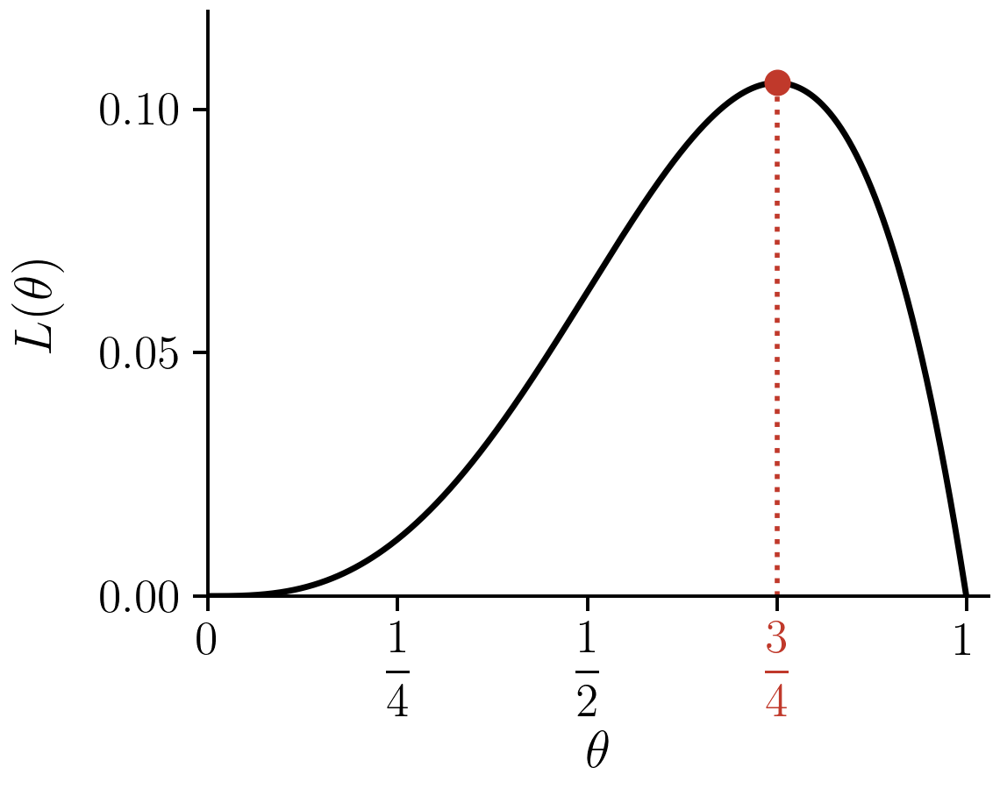
① \(1,\ 0,\ 1,\ 1\)
② \(0,\ 1,\ 0,\ 0\)
③ \(1,\ 1,\ 1,\ 1\)
④ \(1,\ 1,\ 0,\ 0\)
①
(4) 세 번 던져 \(1,\ 0,\ 1\) 을 얻었다. \(\theta\) 의 최대가능도추정값을 구하라.
\(\frac{2}{3}\)
(5) (4) 에서 다음을 최대가능도방법으로 추정하라. (모분산은 \(\theta(1-\theta)\) 이고, \(1\) 이 처음 나올 때까지 던지는 횟수의 기댓값은 \(\frac{1}{\theta}\) 이다.)
- (가) 뒷면이 나올 확률
- (나) 모분산
- (다) \(1\) 이 처음 나올 때까지 던지는 횟수의 기댓값
(가) \(\frac{1}{3}\) · (나) \(\frac{2}{9}\) · (다) \(\frac{3}{2}\)
(6) 어떤 기록으로 구한 가능도함수가 \(L(\theta)=\theta^2(1-\theta)^4\) 이었다. 이 가능도함수를 나오게 할 만한 기록을 모두 고르라.
① \(1,\ 1,\ 0,\ 0,\ 0,\ 0\)
② \(0,\ 1,\ 0,\ 0,\ 1,\ 0\)
③ \(1,\ 1,\ 1,\ 1,\ 0,\ 0\)
④ \(1,\ 0,\ 1,\ 0\)
① · ②
(7) 세 번 던져 \(x_1,\ x_2,\ x_3\) 을 얻었다. 그런데 \(x_1,\ x_2,\ x_3\) 은 알려 주지 않고 그 평균 \(\bar{x}=\frac{x_1+x_2+x_3}{3}\) 만 알려 주었다. \(L(0.5\mid\bar{x}=\frac{2}{3})\) 과 \(L(0.5\mid\bar{x}=\frac{1}{2})\) 를 구하라.
\(\frac{3}{8}\), \(0\)
(8) (1) 에서 다섯 번 던져 \(1,\ 0,\ 0,\ 1,\ 0\) 을 얻은 뒤 한 번 더 던졌다. 이를 두고 나눈 대화에서 올바른 것을 모두 고르라.
① 재석: “여섯째가 \(1\) 이면 \(\theta\) 의 최대가능도추정값은 \(0.4\) 에서 \(\frac{1}{2}\) 로 커져.”
② 동엽: “여섯째가 \(0\) 이면 최대가능도추정값은 \(0.4\) 그대로야.”
③ 호동: “여섯째가 무엇이든, 새 가능도함수는 \(\theta^2(1-\theta)^3\) 에 \(\theta\) 나 \(1-\theta\) 가 하나 곱해진 꼴이야.”
① · ③
문제11
정규분포 모형의 가능도함수와 최대가능도추정에 대하여 답하라. (\(X\sim N(\mu,\sigma^2)\) 이면 \(\mathbb{E}(X^2)=\mu^2+\sigma^2\) 이다.)
(1) \(X_1,\dots,X_{10} \overset{i.i.d.}{\sim} N(\mu,1)\) 에서 아래 \(10\) 개를 관측하였다. (\(\sigma^2=1\) 은 알려져 있다.)
\[0,\ 0,\ 1,\ 1,\ 1,\ 2,\ 3,\ 3,\ 4,\ 5\]
\(\mu\) 에 대한 가능도함수 \(L(\mu)\) 의 그래프로 알맞은 것을 고르라.
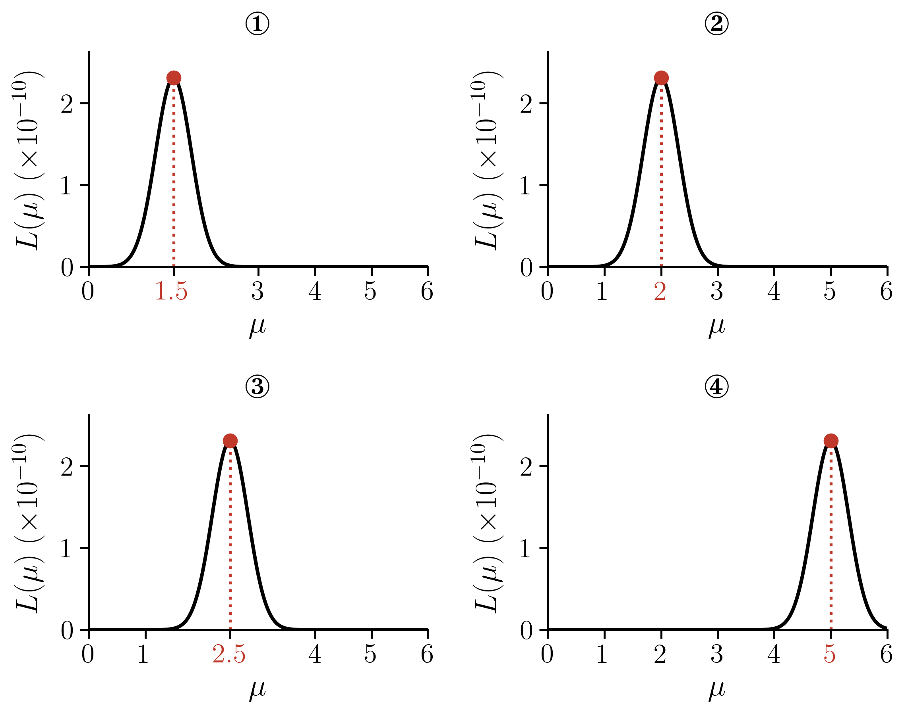
②
(2) (1) 과 같은 관측값 \(10\) 개를, 이번에는 \(\sigma^2\) 도 모른다고 보고 \(X_1,\dots,X_{10} \overset{i.i.d.}{\sim} N(\mu,\sigma^2)\) 의 관측값으로 보자. (이 \(10\) 개에서 편차 제곱의 합을 \(n=10\) 으로 나눈 값은 \(\frac{1}{10}\sum_{i=1}^{10}(x_i-\bar{x})^2=2.6\) 이고, \(n-1=9\) 로 나눈 값은 \(\frac{1}{9}\sum_{i=1}^{10}(x_i-\bar{x})^2\approx2.89\) 이다.) 가능도함수 \(L(\mu,\sigma^2)\) 의 그래프로 알맞은 것을 고르라. (빨간 점이 가장 큰 곳이고, 그 좌표를 적어 두었다.)
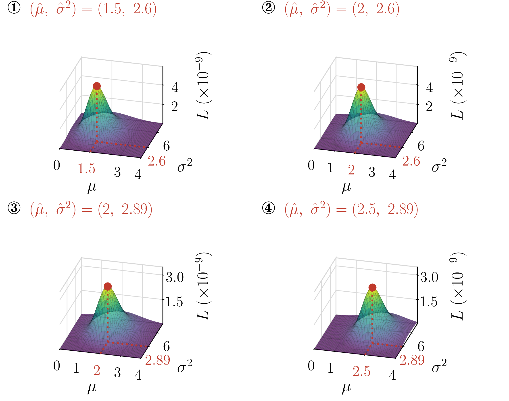
②
(3) \(X_1,\dots,X_4 \overset{i.i.d.}{\sim} N(\mu,\sigma^2)\) 의 관측값 \(4\) 개로 그린 가능도함수 \(L(\mu,\sigma^2)\) 가 아래와 같았다. 이 관측값으로 알맞은 것을 고르라.
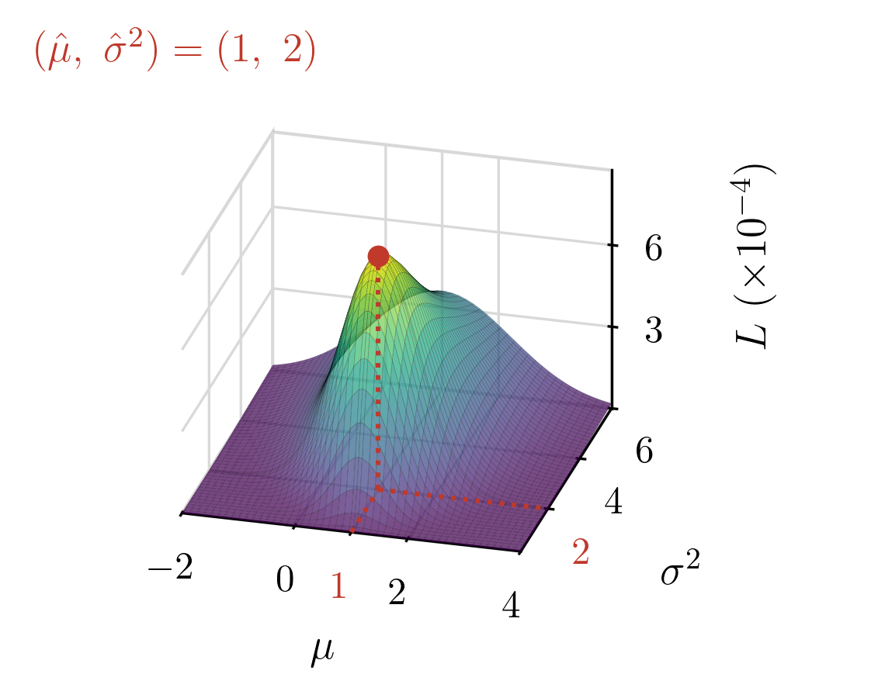
① \(-1,\ 1,\ 1,\ 3\)
② \(0,\ 1,\ 1,\ 2\)
③ \(0,\ 2,\ 2,\ 4\)
④ \(-2,\ 0,\ 0,\ 2\)
①
(4) \(X_1,\dots,X_4 \overset{i.i.d.}{\sim} N(\mu,\sigma^2)\) 에서 \(1,\ 3,\ 5,\ 7\) 을 관측하였다. \(\mu\) 와 \(\sigma^2\) 의 최대가능도추정값을 구하라. (네 값의 제곱의 평균은 \(\frac{1}{4}\sum_{i=1}^{4}x_i^2=21\) 이다.)
\(\hat{\mu}=4\), \(\hat{\sigma}^2=5\)
(5) (4) 와 같은 관측값 \(1,\ 3,\ 5,\ 7\) 에서, 이번에는 \(\sigma^2=1\) 임을 알고 있다고 하자. \(\mathbb{E}(X^2)\) 을 최대가능도방법으로 추정하라.
\(17\)
(6) \(X_1,X_2,X_3 \overset{i.i.d.}{\sim} N(\mu,1)\) 의 관측값으로 구한 가능도함수가 아래와 같았다. \(\mu\) 의 최대가능도추정값을 구하라.
\[L(\mu) = \left(\frac{1}{\sqrt{2\pi}}\right)^3\exp\left[-\frac{(\mu-2.1)^2 + (\mu-3.5)^2 + (\mu-4.3)^2}{2}\right]\]
\(3.3\)
(7) (6) 의 가능도함수를 나오게 할 만한 관측값을 모두 고르라.
① \(2.1,\ 3.5,\ 4.3\)
② \(4.3,\ 2.1,\ 3.5\)
③ \(3.3,\ 3.3,\ 3.3\)
④ \(2.1,\ 3.5\)
① · ②
(8) (4) 의 자료 \(1,\ 3,\ 5,\ 7\) 에 관측값을 하나 더 얻었다. 이를 두고 나눈 대화에서 올바른 것을 모두 고르라.
① 재석: “새 관측값이 \(4\) 이면 \(\hat{\mu}\) 는 \(4\) 그대로야.”
② 동엽: “새 관측값이 \(4\) 이면 \(\hat{\sigma}^2\) 도 \(5\) 그대로야.”
③ 호동: “새 관측값이 \(9\) 이면 \(\hat{\mu}\) 는 \(5\) 가 돼.”
④ 효리: “새 관측값이 무엇이든 \(\hat{\mu}\) 는 \(4\) 그대로야. 하나쯤 더해도 평균은 바뀌지 않거든.”
① · ③
문제12
\(X_1,\dots,X_4 \overset{i.i.d.}{\sim} N(\mu,\sigma^2)\) 에서 \(1,\ 1,\ 5,\ 5\) 를 관측하였다. 갑과 을은 \(\mu\) 를 \(\bar{x}=3\) 으로 추정한 뒤, \(\sigma^2\) 을 아래와 같이 추정하였다.
- 갑: \(\frac{1}{4}\sum_{i=1}^{4}(x_i-\bar{x})^2=4\)
- 을: \(\frac{1}{3}\sum_{i=1}^{4}(x_i-\bar{x})^2=\frac{16}{3}\)
올바른 것을 모두 고르라.
① 가능도 \(L(\mu,\sigma^2)\) 의 값은 \((\mu,\sigma^2)=(3,\ 4)\) 에서가 \(\left(3,\ \frac{16}{3}\right)\) 에서보다 크다.
② 두 사람 가운데 \(\sigma^2\) 의 최대가능도추정값을 구한 사람은 을이다.
③ \(\mu=3\) 임을 미리 알고 있었다면, \(\sigma^2\) 의 최대가능도추정값은 을의 값 \(\frac{16}{3}\) 이다.
①
문제13
다음 글을 읽고 물음에 답하라.
명제 \(P\) 가 참이면 \(1\), 거짓이면 \(0\) 인 함수 \(I(P)\) 를 지시함수라 한다. 균등분포 \(U(a,b)\) 의 확률밀도함수는 지시함수로 \(f(x)=\frac{1}{b-a}I(a \leq x \leq b)\) 라 쓸 수 있다. 그래서 \(X_1,\dots,X_5 \overset{i.i.d.}{\sim} U(a,b)\) 에서 아래 자료를 얻었다.
\[x_1=1.3,\quad x_2=0.8,\quad x_3=2.6,\quad x_4=1.9,\quad x_5=2.2\]
한 학생은 이 자료의 가능도함수를 아래와 같이 구하였다.
\[ \begin{aligned} L(a,b) &= \frac{1}{b-a}I(a \leq x_1 \leq b) \times \cdots \times \frac{1}{b-a}I(a \leq x_5 \leq b) \\ &= \frac{1}{(b-a)^5}\, I(a \leq x_1 \leq b) \cdots I(a \leq x_5 \leq b) \\ &= \frac{1}{(b-a)^5}\, I\big(a \leq \min(x_1,\dots,x_5)\big)\, I\big(\max(x_1,\dots,x_5) \leq b\big) \\ &= \frac{1}{(b-a)^5}\, I(a \leq 0.8)\, I(2.6 \leq b) \end{aligned} \]
(1) 윗글의 자료에서 \(a\), \(b\) 의 최대가능도추정값을 구하고, 모평균 \(\mathbb{E}(X)\), 모분산 \(\mathbb{V}(X)\), 범위 \(R(X)\) 를 최대가능도방법으로 추정하라. (\(X\sim U(a,b)\) 이면 \(\mathbb{E}(X)=\frac{a+b}{2}\), \(\mathbb{V}(X)=\frac{(b-a)^2}{12}\), \(R(X)=b-a\) 이다.)
\(\hat{a}=0.8\), \(\hat{b}=2.6\), 모평균 \(1.7\), 모분산 \(\frac{1.8^2}{12}=0.27\), 범위 \(1.8\)
(2) 윗글의 자료에 관측값을 하나 더 얻어 관측값이 여섯 개가 되었다고 하자. 이를 두고 나눈 대화에서 올바른 것을 모두 고르라.
① 재석: “새 관측값이 \(1.5\) 라면, 가능도를 가장 크게 하는 \((a,b)\) 는 \((0.8,\ 2.6)\) 그대로야.”
② 동엽: “새 관측값이 \(1.5\) 라면, 가능도함수도 처음과 똑같아.”
③ 호동: “새 관측값이 \(3.0\) 이라면, 가능도를 가장 크게 하는 \(b\) 는 \(3.0\) 이 돼.”
④ 효리: “새 관측값이 \(0.5\) 라면, \((a,b)=(0.8,\ 2.6)\) 에서 가능도는 \(0\) 이야.”
① · ③ · ④
(3) \(X_1,X_2,X_3 \overset{i.i.d.}{\sim} U(a,b)\) 에서 아래 자료를 얻었다.
\[x_1=1.2,\quad x_2=1.5,\quad x_3=1.8\]
가능도함수 \(L(a,b)\) 의 값을 몇 점에서 계산한 표로 알맞은 것을 고르라.
①
| \(b=1.7\) | \(b=1.8\) | \(b=1.9\) | |
|---|---|---|---|
| \(a=1.1\) | \(0\) | \(0\) | \(0\) |
| \(a=1.2\) | \(\frac{1}{(1.7-1.2)^3}\) | \(\frac{1}{(1.8-1.2)^3}\) | \(0\) |
| \(a=1.3\) | \(\frac{1}{(1.7-1.3)^3}\) | \(\frac{1}{(1.8-1.3)^3}\) | \(0\) |
②
| \(b=1.7\) | \(b=1.8\) | \(b=1.9\) | |
|---|---|---|---|
| \(a=1.1\) | \(0\) | \(\frac{1}{(1.8-1.1)^3}\) | \(\frac{1}{(1.9-1.1)^3}\) |
| \(a=1.2\) | \(0\) | \(\frac{1}{(1.8-1.2)^3}\) | \(\frac{1}{(1.9-1.2)^3}\) |
| \(a=1.3\) | \(0\) | \(0\) | \(0\) |
②
(4) \(X_1,\dots,X_4 \overset{i.i.d.}{\sim} U(a,b)\) 에서 아래 자료를 관측하였다.
\[x_1=0.6,\quad x_2=1.3,\quad x_3=1.0,\quad x_4=1.7\]
가능도함수 \(L(a,b)\) 의 그래프로 알맞은 것을 고르라.
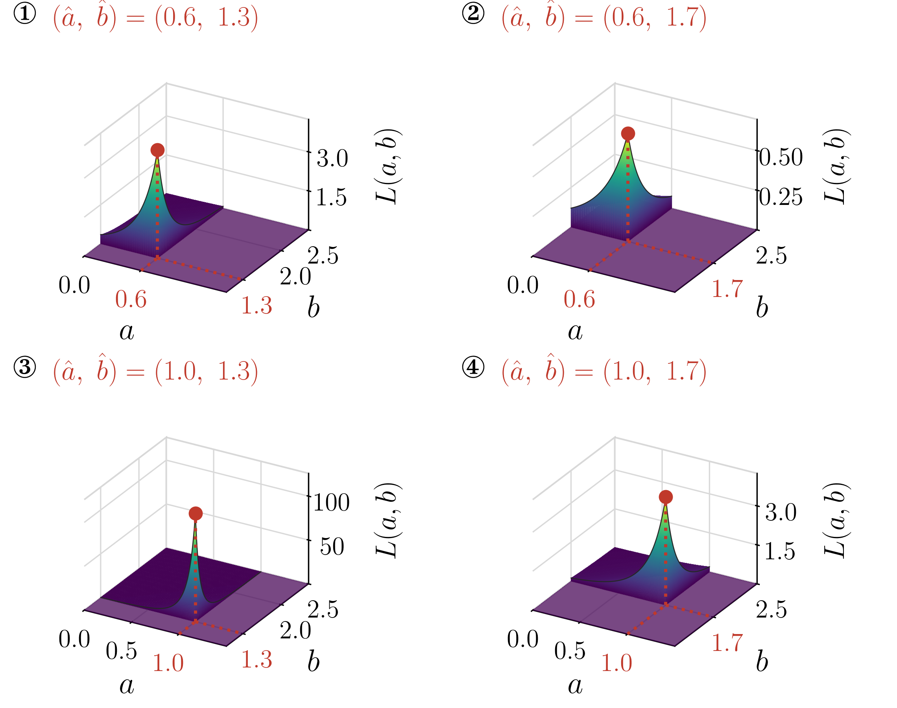
②
(5) \(X_1,\dots,X_4 \overset{i.i.d.}{\sim} U(a,b)\) 의 네 관측값으로 그린 가능도함수 \(L(a,b)\) 가 아래와 같았다. 이 관측값으로 알맞은 것을 고르라.
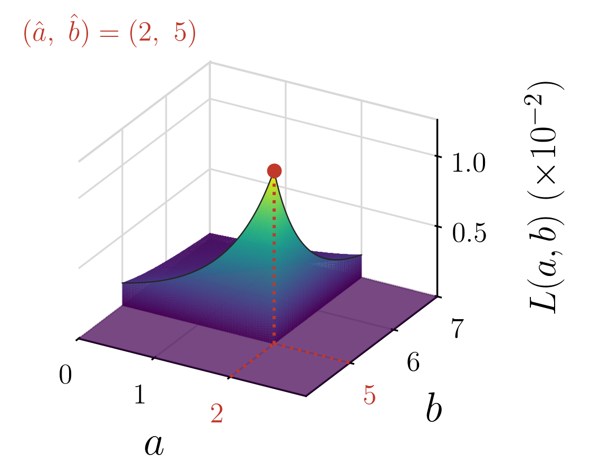
① \(2,\ 4,\ 4,\ 5\)
② \(2,\ 3,\ 4,\ 6\)
③ \(3,\ 4,\ 5,\ 5\)
④ \(1,\ 2,\ 3,\ 5\)
①
(6) 어떤 자료로 구한 가능도함수가 \(L(a,b)=\frac{1}{(b-a)^3}\,I(a\leq1.2)\,I(2.5\leq b)\) 이었다. 이 가능도함수를 나오게 할 만한 자료를 모두 고르라.
① \(1.2,\ 1.8,\ 2.5\)
② \(2.5,\ 1.2,\ 2.0\)
③ \(1.2,\ 2.5\)
④ \(1.2,\ 1.8,\ 2.4,\ 2.5\)
① · ②
(7) \(X \sim U(0,\theta)\) 에서 아래 \(4\) 개의 표본을 얻었다.
\[x_1=0.3,\quad x_2=0.1,\quad x_3=0.7,\quad x_4=0.5\]
\(\theta\) 의 최대가능도추정값을 구하고, 모평균을 최대가능도방법으로 추정하라. (\(X\sim U(0,\theta)\) 이면 \(\mathbb{E}(X)=\frac{\theta}{2}\) 이다.)
\(0.7\), \(0.35\)
문제14
평면 위의 점 \((x_i,y_i)\), \(i=1,\dots,100\) 을 관측하여 점들의 중심을 추정하는 두 방법이 있다.
- A: \(\left(\frac{\min_i x_i+\max_i x_i}{2},\ \frac{\min_i y_i+\max_i y_i}{2}\right)\) 로 추정한다.
- B: \((\bar{x},\ \bar{y})\) 로 추정한다.
\(x_i\), \(y_i\) 가 모두 서로 독립으로 \(U(0,1)\) 을 따르는 자료 \(100\) 개를 만들어 추정하는 일을 \(2000\) 번 되풀이하고, 추정값을 과녁에 찍었다. 과녁의 중심(\(+\))이 참값이다. 아래 (가), (나) 가운데 하나는 A 로, 다른 하나는 B 로 찍은 것이다.
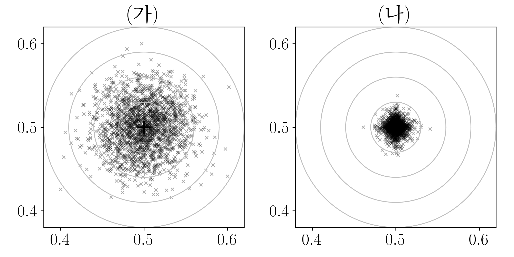
(가), (나) 가운데 A 로 찍은 것을 고르라.
(나)
문제15
다음 설명이 옳으면 O, 틀리면 X 를 쓰라.
- (가) \(X_1,\dots,X_n \overset{i.i.d.}{\sim} N(\mu,\sigma^2)\) 이면, 평균 \(\mu\) 의 최대가능도추정값은 표본평균 \(\bar{x}\) 이다.
- (나) \(X_1,\dots,X_n \overset{i.i.d.}{\sim} U(a,b)\) 이면, 평균 \(\frac{a+b}{2}\) 의 최대가능도추정값은 표본평균 \(\bar{x}\) 이다.
- (다) 자료가 정규분포에서 나왔다면, 평균을 표본평균으로 추정한 값은 중앙값으로 추정한 값보다 참값 둘레에 좁게 모인다.
- (라) 표본평균은 자료를 모두 쓰므로, 자료가 어떤 분포에서 나왔든 평균을 추정하는 다른 어떤 방법보다 참값 둘레에 좁게 모인다.
(가) O · (나) X · (다) O · (라) X
문제16
바늘이 하나 있는 시계에서 바늘을 무작위로 돌린다. 바늘의 위치를 각도로 나타내면 \(\Omega=[0,2\pi)\) 이고, 바늘이 \(\Omega\) 의 부분집합 \(\Omega^*\) 에 멈출 확률을 \(P(\Omega^*) = \frac{m(\Omega^*)}{2\pi}\) 로 정한다. 확률은 이렇게 \(\Omega\) 의 부분집합에만 매기고, \(\Omega\) 를 벗어나는 집합에는 매기지 않는다. 길이 \(m\) 은 아래와 같이 약속하고, 집합을 평행이동해도 길이는 변하지 않는다고 하자.
- 약속1: 구간 \((a,b)\) 의 길이는 \(b-a\) 이다.
- 약속2: 한 점의 길이는 \(0\) 이다.
- 약속3: 점을 무한히 합치면 선이 되는 것처럼, 점의 길이를 무한히 합치면 \(0\) 이 아니라 \(0\) 보다 큰 어떠한 수가 된다.
- 약속4: 구간 \((a,b)\) 사이의 모든 유리수의 길이는 \(\frac{b-a}{2}\) 이다.
이렇게 길이를 재면 확률을 정의할 때 모순이 생긴다. 다음은 그것을 보인 풀이이다.
\(A\) 를 \((0,\pi)\) 사이의 모든 유리수로 이루어진 집합이라 하자. 약속4에 의해 \(m(A)=\frac{\pi}{2}\) 이므로 \(P(A)=\frac{\pi/2}{2\pi}=\frac{1}{4}\) 이다. \(A\) 의 모든 점에 \(\sqrt{2}\), \(\frac{\sqrt{2}}{2}\), \(\frac{\sqrt{2}}{3}\), \(\frac{\sqrt{2}}{4}\) 를 더하여 만든 집합을 각각 \(A_{\sqrt{2}}\), \(A_{\sqrt{2}/2}\), \(A_{\sqrt{2}/3}\), \(A_{\sqrt{2}/4}\) 라 하자. 평행이동해도 길이는 변하지 않으므로 이 네 집합의 확률도 저마다 \(\frac{1}{4}\) 이다. 또 \(A\) 까지 다섯 집합은 모두 \(\Omega\) 의 부분집합이고 서로 겹치지 않는다. 따라서
\[P(A\cup A_{\sqrt{2}}\cup A_{\sqrt{2}/2}\cup A_{\sqrt{2}/3}\cup A_{\sqrt{2}/4}) = 5\times\frac{1}{4}=\frac{5}{4}>1\]
이 되어 확률의 공리에 어긋난다.
이번에는 윗글의 \(A\) 의 원소에 \(\frac{2\pi}{k}\) 를 더해 만든 집합을 \(A_{2\pi/k}\) 라 하자. (\(k=1,2,3,\dots\))
(1) 다음 가운데 \(\Omega\) 의 부분집합인 것을 모두 고르라.
① \(A_{2\pi}\)
② \(A_{2\pi/2}\)
③ \(A_{2\pi/3}\)
④ \(A_{2\pi/4}\)
② · ③ · ④
(2) 올바른 것을 모두 고르라.
① \(P(A_{2\pi})\) 는 정할 수 없다. 약속1~4 로 길이를 재는 방법은 \(\Omega\) 의 부분집합에서만 유효하기 때문이다.
② \(A, A_{2\pi/2}, A_{2\pi/3}, A_{2\pi/4}\) 는 서로 겹치지 않고, 각각의 확률은 \(\frac{1}{4}\) 이다.
③ \(A, A_{2\pi}, A_{2\pi/2}, A_{2\pi/3}, A_{2\pi/4}\) 의 확률을 모두 더하면 \(\frac{5}{4}\) 이므로, 이 다섯 집합으로 모순을 얻는다.
④ \(A_{2\pi}\) 대신 \(A_{2\pi/5}\) 를 쓰면, \(A, A_{2\pi/2}, A_{2\pi/3}, A_{2\pi/4}, A_{2\pi/5}\) 다섯 집합으로 모순을 얻을 수 있다.
① · ② · ④
(3) 윗글의 풀이에서는 다섯 집합 \(A, A_{\sqrt{2}}, A_{\sqrt{2}/2}, A_{\sqrt{2}/3}, A_{\sqrt{2}/4}\) 로 모순을 얻었다. 그런데 \(\frac{2\pi}{k}\) 를 더해 만든 다섯 집합 \(A, A_{2\pi}, A_{2\pi/2}, A_{2\pi/3}, A_{2\pi/4}\) 로는 같은 방법으로 모순을 얻을 수 없다. 그 까닭으로 올바른 것을 모두 고르라.
① \(A_{2\pi}\) 이 \(\Omega\) 를 벗어나기 때문이다.
② \(2\pi\) 가 유리수이기 때문이다.
③ 확률은 \(\Omega\) 의 부분집합에만 매기기로 했기 때문이다.
① · ③
문제17
(1) 다음 명제가 참이면 O, 거짓이면 X 를 쓰라. (\(\mathbb{N}=\{1,2,3,\dots\}\) 은 자연수 전체, \(\mathbb{R}\) 은 실수 전체의 집합이다.)
- (가) \(\forall n\in\mathbb{N}:\ n+1\in\mathbb{N}\)
- (나) \(\exists n\in\mathbb{N}\) such that \(n+1=1\)
- (다) \(\forall x\in\mathbb{R}\ \ \exists y\in\mathbb{R}\) such that \(x+y=0\)
- (라) \(\exists y\in\mathbb{R}\) such that \(\forall x\in\mathbb{R}:\ x+y=0\)
(가) O · (나) X · (다) O · (라) X
(2) 함수 \(f:X\to Y\) 에 대한 아래 기호 문장 (가), (나) 의 뜻으로 알맞은 것을 ①~④ 에서 각각 고르라.
- (가) \(\exists x_1,x_2\in X\) such that \(x_1\neq x_2\) and \(f(x_1)=f(x_2)\)
- (나) \(\exists y\in Y\) such that \(\forall x\in X:\ f(x)\neq y\)
① \(f\) 는 단사이다.
② \(f\) 는 전사이다.
③ \(f\) 는 단사가 아니다.
④ \(f\) 는 전사가 아니다.
(답은 ‘(가) ②, (나) ①’ 과 같은 꼴로 쓴다.)
(가) ③, (나) ④
(3) “모든 자연수 \(n\) 에 대하여, \(n^2\) 은 \(n\) 이상이다” 를 기호로 바르게 쓴 것을 모두 고르라.
① \(\forall n\in\mathbb{N}:\ n^2\geq n\)
② \(n^2\geq n,\ \forall n\in\mathbb{N}\)
③ \(\exists n\in\mathbb{N}\) such that \(n^2\geq n\)
④ \(n\in\mathbb{N}\Rightarrow n^2\geq n\)
① · ② · ④
문제18
아래 (가)~(라) 는 모두 같은 규칙 \(f(x)=x^2\) 으로 집합 \(X\) 의 원소를 집합 \(Y\) 의 원소로 보내는 함수를 화살표로 나타낸 것이다. 네 그림에서 다른 것은 \(X\) 와 \(Y\) 뿐이다. 왼쪽 타원이 \(X\), 오른쪽 타원이 \(Y\) 이다.
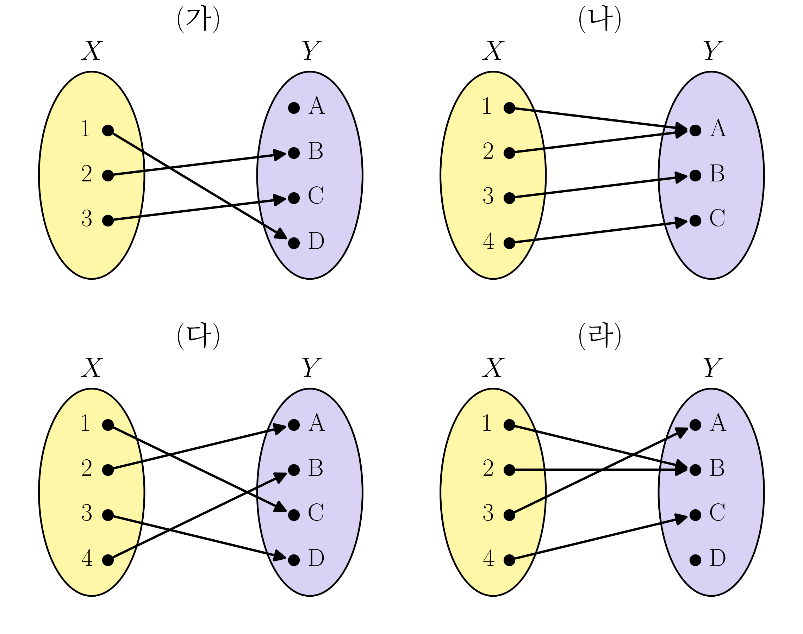
(1) 단사함수인 것을 모두 고르라.
(나) · (다)
(2) 전사함수인 것을 모두 고르라.
(가) · (나)
(3) 전단사함수인 것을 모두 고르라.
(나)
문제19
다음 명제가 참이면 증명하고, 거짓이면 반례를 들어라.
실수의 두 구간 \(A=[a,b]\), \(B=[c,d]\) (단, \(a<b\), \(c<d\)) 에 대하여, \(A\) 의 길이 \(b-a\) 가 \(B\) 의 길이 \(d-c\) 보다 길면 \(|A|>|B|\) 이다.
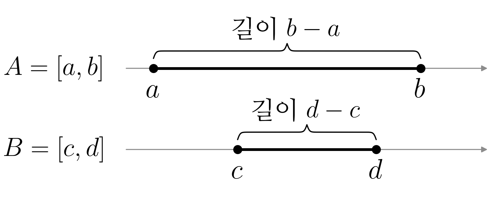
거짓 — 반례: \(A=[0,2]\), \(B=[0,1]\) (\(f(x)=2x\) 가 \(B\) 에서 \(A\) 로 가는 전단사함수이므로 \(|A|=|B|\))
문제20
다음 물음에 답하라.
(1) 아래 세 수열 각각에 대하여, 그 수열의 값들로 이루어진 집합을 생각하자. 그 집합의 카디널리티가 \(|\mathbb{N}|\) 과 같은 것을 모두 고르라.
① \(1,\ \frac{1}{2},\ \frac{1}{3},\ \frac{1}{4},\ \dots\)
② \(0,\ \frac{1}{2},\ \frac{2}{2},\ \frac{1}{3},\ \frac{2}{3},\ \frac{3}{3},\ \frac{1}{4},\ \dots\)
③ \(-44,\ -2,\ 0,\ 1,\ 2,\ 3,\ \dots\)
① · ② · ③
(2) (1) ② 의 수열을 \(a_1,a_2,a_3,\dots\) 라 하고, 그 값들의 집합을 \(A\) 라 하자. \(\mathbb{N}\) 에서 \(A\) 로 가는 함수 \(f(n)=a_n\) 에 대하여 올바른 것을 모두 고르라.
① \(f\) 는 전사함수이다.
② \(f\) 는 단사함수이다.
③ \(f\) 가 전단사함수가 아니므로, \(|A|\neq|\mathbb{N}|\) 이다.
①
문제21
좌표평면에서 두 좌표가 모두 정수인 점 전체의 집합을 \(L=\{(a,b): a,b\in\mathbb{Z}\}\) 라 하자. (\(\mathbb{Z}\) 는 정수 전체의 집합) 아래 그림의 (가), (나) 는 \(L\) 의 점을 한 걸음에 하나씩 차례로 밟아 가는 두 길이다. \(n\) 번째 걸음에 밟는 점을 \(g(n)\) 이라 하면, \(g\) 는 \(\mathbb{N}=\{1,2,3,\dots\}\) 에서 \(L\) 로 가는 함수이다. (\(g(1)\) 은 원점) 다음 물음에 답하라.
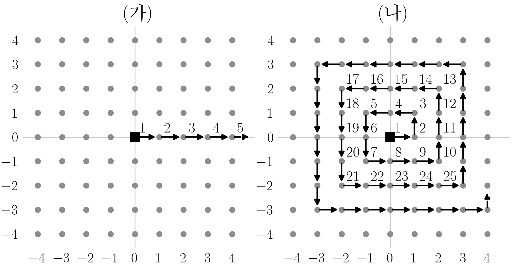
(1) 올바른 것을 모두 고르라.
① (가) 의 \(g\) 는 단사함수이지만 전사함수는 아니다.
② (가) 의 \(g\) 가 전사함수가 아니므로, \(|\mathbb{N}|<|L|\) 이다.
③ (나) 의 \(g\) 는 전단사함수이므로, \(|\mathbb{N}|=|L|\) 이다.
① · ③
(2) \(L\) 의 점 가운데 두 좌표가 모두 \(0\) 이상인 점 전체의 집합을 \(L^+\) 라 하자. 올바른 것을 모두 고르라.
① \(L^+\subset L\) 이므로 \(|L^+|\leq|L|\) 이고, (1) 에서 \(|L|=|\mathbb{N}|\) 이므로 \(|L^+|\leq|\mathbb{N}|\) 이다.
② (가) 의 \(g\) 의 값은 모두 \(L^+\) 에 들어 있으므로, \(\mathbb{N}\) 에서 \(L^+\) 로 가는 단사함수가 있다. 곧 \(|\mathbb{N}|\leq|L^+|\) 이다.
③ ① 과 ② 를 합치면 \(|L^+|=|\mathbb{N}|\) 이다.
④ \(L^+\) 는 \(L\) 의 대략 \(\frac{1}{4}\) 만 차지하므로, \(|L^+|\) 는 \(|L|\) 보다 작다.
① · ② · ③
문제22
다음은 \(|\mathbb{N}|=|\mathbb{Q}|\) 임을 보인 증명이다. 물음에 답하라.
\(|\mathbb{N}|=|\mathbb{Q}|\) 임을 보이자. 먼저 양의 유리수 전체의 집합 \(\mathbb{Q}^+\) 에 대하여 \(|\mathbb{N}|=|\mathbb{Q}^+|\) 임을 보이고, 그다음 \(0\) 과 음의 유리수까지 넣어 \(\mathbb{Q}\) 전체로 넓힌다. \(|\mathbb{N}|=|\mathbb{Q}^+|\) 를 보이려면 \(\mathbb{N}\) 에서 \(\mathbb{Q}^+\) 로 가는 전단사함수를 찾으면 된다. 아래 그림처럼 분수 \(\frac{p}{q}\) 를 \(p\) 번째 줄, \(q\) 번째 칸에 적고, 화살표를 따라 나오는 분수를 차례로 \(a_1,a_2,a_3,\dots\) 라 하자.
| \(n\) | \(1\) | \(2\) | \(3\) | \(4\) | \(5\) | \(6\) | \(7\) | \(8\) | \(9\) | \(10\) | \(11\) | \(12\) | \(\cdots\) |
|---|---|---|---|---|---|---|---|---|---|---|---|---|---|
| \(a_n\) | \(1/1\) | \(2/1\) | \(1/2\) | \(1/3\) | \(2/2\) | \(3/1\) | \(4/1\) | \(3/2\) | \(2/3\) | \(1/4\) | \(1/5\) | \(2/4\) | \(\cdots\) |
그러면 ㉠ 모든 양의 유리수는 이 수열 어딘가에 반드시 나온다. 다만 \(a_5=\frac{2}{2}=a_1\), \(a_{12}=\frac{2}{4}=a_3\) 처럼 이미 나온 수(그림의 빨간 분수)가 다시 나오기도 한다. 그래서 ㉡ 처음 나오는 항의 번호만 골라 차례로 \(b_1,b_2,b_3,\dots\) 라 한다.
| \(n\) | \(1\) | \(2\) | \(3\) | \(4\) | \(5\) | \(6\) | \(7\) | \(8\) | \(9\) | \(10\) | \(\cdots\) |
|---|---|---|---|---|---|---|---|---|---|---|---|
| \(b_n\) | \(1\) | \(2\) | \(3\) | \(4\) | \(6\) | \(7\) | \(8\) | \(9\) | \(10\) | \(11\) | \(\cdots\) |
| \(a(b_n)\) | \(1/1\) | \(2/1\) | \(1/2\) | \(1/3\) | \(3/1\) | \(4/1\) | \(3/2\) | \(2/3\) | \(1/4\) | \(1/5\) | \(\cdots\) |
그러면 \(f(n)=a(b_n)\) 은 \(\mathbb{N}\) 에서 \(\mathbb{Q}^+\) 로 가는 전단사함수이므로 \(|\mathbb{N}|=|\mathbb{Q}^+|\) 이다. 이제 \(a(b_n)\) 을 \(q_n\) 이라 쓰자(\(q_1=1\), \(q_2=2\), \(q_3=\frac{1}{2}\), \(\dots\)). 음의 유리수는 \(-q_1,-q_2,-q_3,\dots\) 이다. \(\mathbb{Q}\) 의 수를 (가) 와 같이 늘어놓고 자연수 \(1,2,3,\dots\) 와 차례로 짝지으면 \(\mathbb{N}\) 에서 \(\mathbb{Q}\) 로 가는 전단사함수를 얻는다. 따라서 \(|\mathbb{N}|=|\mathbb{Q}|\) 이다.
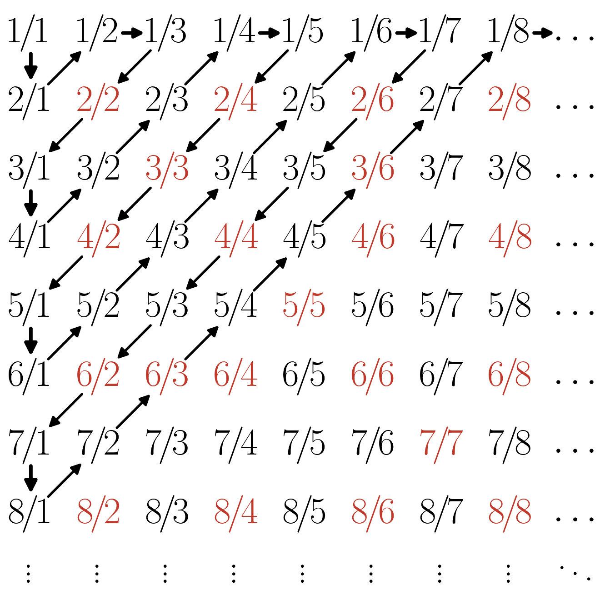
(1) ㉠ 이 성립하는 까닭으로 가장 적절한 것을 고르라.
① 양의 유리수 \(\frac{p}{q}\) 는 모두 그림의 \(p\) 번째 줄, \(q\) 번째 칸에 있고, 화살표는 칸이 유한개인 비스듬한 줄을 차례로 훑으므로 어느 칸이든 유한한 차례에 지나가기 때문이다.
② 유리수는 셀 수 있는 집합이기 때문이다.
①
(2) 밑줄 친 ㉡ 에 대한 설명으로 올바른 것을 모두 고르라.
① ㉡ 을 하지 않고 \(f(n)=a_n\) 으로 두어도 \(f\) 는 \(\mathbb{N}\) 에서 \(\mathbb{Q}^+\) 로 가는 전사함수이지만, 같은 수가 다시 나오므로 단사함수는 아니다.
② ㉡ 에서 고르지 않은 항은 모두 앞에 이미 나온 수이므로, 고르지 않아도 \(q_1,q_2,q_3,\dots\) 에서 빠지는 양의 유리수는 없다.
③ ㉡ 을 거친 뒤에도 \(f(n)=q_n\) 은 전사함수일 뿐, 단사함수는 아니다.
④ ㉡ 에서 고르지 않는 항이 끝없이 많으므로, 어느 자연수 \(n\) 부터는 \(b_n\) 으로 고를 번호가 남지 않는다.
① · ②
(3) (가) 에 들어갈 늘어놓기로 알맞은 것을 모두 고르라.
① \(0,\ q_1,\ -q_1,\ q_2,\ -q_2,\ q_3,\ -q_3,\ \dots\)
② \(0,\ q_1,\ q_2,\ -q_1,\ q_3,\ q_4,\ -q_2,\ \dots\) (양수 둘, 음수 하나를 번갈아)
③ \(q_1,\ -q_1,\ q_2,\ -q_2,\ q_3,\ -q_3,\ \dots\) (\(0\) 은 넣지 않음)
① · ②
문제23
다음은 \(|\mathbb{Q}|<|\mathbb{R}|\) 임을 보인 증명이다. 물음에 답하라.
\(|\mathbb{Q}|<|\mathbb{R}|\) 임을 보이자. \(|[0,1]|\leq|\mathbb{R}|\) 이므로 \(|\mathbb{Q}|<|[0,1]|\) 임을 보여도 되고, \(|\mathbb{N}|=|\mathbb{Q}|\) 이므로 그 대신 \(|\mathbb{N}|<|[0,1]|\) 임을 보여도 된다. 이를 위해서는 \(\mathbb{N}\) 에서 \([0,1]\) 로 가는 단사함수는 있지만 전사함수는 없음을 보이면 된다. 먼저 단사함수는 (가) 처럼 바로 잡을 수 있다. 전사함수가 없음은 바로 보이기 어려우므로 귀류법을 쓴다. \(\mathbb{N}\) 에서 \([0,1]\) 로 가는 전사함수 \(f\) 가 있다고 하자. 그러면 ㉠ \([0,1]=\{f(n): n\in\mathbb{N}\}\) 이다. 이제 \(a_n=f(n)\) 이라 하고, 수 \(y=0.x_1x_2x_3\cdots\) 의 소수점 아래 \(n\) 번째 자리 \(x_n\) 을 \(a_n\) 의 소수점 아래 \(n\) 번째 자리와 다른 숫자로 정한다. (단 \(x_n\) 은 \(0\) 이나 \(9\) 가 아니다.) 그러면 ㉡ \(y\) 는 \(a_1,a_2,a_3,\dots\) 가운데 어디에도 없다. 그런데 \(y\) 는 \([0,1]\) 의 수이므로, 이것은 모순이다. 따라서 \(\mathbb{N}\) 에서 \([0,1]\) 로 가는 전사함수는 없고, \(|\mathbb{N}|<|[0,1]|\) 이다. 곧 \(|\mathbb{Q}|<|\mathbb{R}|\) 이다.
(1) (가) 에 들어갈 것으로 알맞은 것을 모두 고르라.
① \(g(n)=\frac{1}{n}\)
② \(g(n)=n\)
③ \(g(n)=\frac{1}{n+1}\)
④ \(g(n)=\frac{1}{2}\)
① · ③
(2) 밑줄 친 ㉠ 에 대한 설명으로 올바른 것을 모두 고르라.
① ㉠ 에 따르면 \([0,1]\) 의 수는 모두 \(f(1),f(2),f(3),\dots\) 가운데 어딘가에 나온다.
② ㉠ 이 성립하려면 서로 다른 \(n\) 에 대하여 \(f(n)\) 이 모두 달라야 한다.
③ ㉠ 이 성립하려면 \(f(1)<f(2)<f(3)<\cdots\) 처럼 함숫값이 크기 순서로 놓여야 한다.
①
(3) \(a_1,a_2,a_3,a_4\) 가 아래와 같을 때, 위 증명의 방법으로 만들 수 있는 \(y\) 를 하나 골라 소수점 아래 넷째 자리까지 쓰라.
\[a_1=0.5141\cdots,\quad a_2=0.2718\cdots,\quad a_3=0.1454\cdots,\quad a_4=0.3772\cdots\]
예: \(0.1111\) (소수점 아래 \(n\) 번째 자리가 \(a_n\) 의 \(n\) 번째 자리와 다르고 \(0\), \(9\) 가 아니면 모두 정답)
(4) 밑줄 친 ㉡ 과 그 뒤의 논증에 대한 설명으로 올바른 것을 모두 고르라.
① ㉡ 이 성립하는 것은, 어느 \(n\) 에 대해서도 \(y\) 와 \(a_n\) 의 소수점 아래 \(n\) 번째 자리가 다르기 때문이다.
② \([0,1]\) 의 수를 늘어놓은 어떤 목록에 대해서도 같은 방법으로 그 목록에 없는 \([0,1]\) 의 수를 만들 수 있다.
③ ㉡ 에 따르면 \(y\) 는 \([0,1]\) 의 수가 아니다.
① · ② 또는 ① · ② · ③ (복수정답)
문제24
두 집합 \(X\), \(Y\) 를 아래와 같이 두자.
- \(X=\) \([0,1]\) 사이의 모든 유리수의 집합
- \(Y=\) \([0,1]\)
세 학생이 \(|X|<|Y|\) 를 보이려고 아래와 같이 논증하였다. 올바른 논증을 모두 고르라.
① \(x\mapsto x\) 는 \(X\) 에서 \(Y\) 로 가는 단사함수이다. 그런데 \(\frac{\sqrt2}{2}\) 는 \(Y\) 의 원소이지만 유리수가 아니므로 이 함수의 값으로 나오지 않는다. 즉 이 함수는 단사이지만 전사가 아니어서 전단사함수가 아니다. 따라서 \(|X|<|Y|\) 이다.
② \(x\mapsto x\) 는 \(X\) 에서 \(Y\) 로 가는 단사함수이므로 \(|X|\le|Y|\) 이다. 만약 \(|X|=|Y|\) 라면 전단사함수 \(\varphi:X\to Y\) 가 있고, \(X\) 는 유리수만 모은 셀 수 있는 집합이므로 \(X=\{x_1,x_2,x_3,\dots\}\) 로 쓰면 \(Y=\{\varphi(x_1),\varphi(x_2),\varphi(x_3),\dots\}\) 가 되어 \(Y\) 도 셀 수 있는 집합이 된다. 그런데 \([0,1]\) 은 셀 수 있는 집합이 아니므로 모순이다. 따라서 \(|X|<|Y|\) 이다.
③ \(Y\) 의 길이는 \(1\) 이고, \(X\) 는 유리수만 모은 집합이라 길이가 \(0\) 이다. 길이는 집합이 차지하는 크기이므로, 길이가 더 긴 집합일수록 원소가 더 많고 카디널리티도 더 크다. 따라서 \(|X|<|Y|\) 이다.
②
문제25
다음은 \(|\mathbb{Q}|<|\mathbb{R}-\mathbb{Q}|\) 임을 보이는 증명이다. (\(\mathbb{R}-\mathbb{Q}\) 는 무리수 전체의 집합이다.)
\(|\mathbb{N}|=|\mathbb{Q}|\) 이고 \(|\mathbb{Q}|<|\mathbb{R}|\) 임은 이미 보였다. 먼저 \(|\mathbb{Q}|\leq|\mathbb{R}-\mathbb{Q}|\) 를 보이는 것은 어렵지 않다. \(\mathbb{Q}\) 에서 \(\mathbb{R}-\mathbb{Q}\) 로 가는 단사함수를 (가) 처럼 잡으면 되기 때문이다. 이제 \(|\mathbb{Q}|\neq|\mathbb{R}-\mathbb{Q}|\) 임을 귀류법으로 보이자. \(|\mathbb{Q}|=|\mathbb{R}-\mathbb{Q}|\) 라고 하자. 그러면 ㉠ \(\mathbb{Q}=\{q_1,q_2,q_3,\dots\}\), \(\mathbb{R}-\mathbb{Q}=\{r_1,r_2,r_3,\dots\}\) 로 쓸 수 있다. 실수는 유리수이거나 무리수이므로, 실수 전체를 (나) 처럼 한 줄로 늘어놓을 수 있다. 이것은 실수가 셀 수 있는 집합이라는 뜻이므로 (다) 와 모순이다. 따라서 \(|\mathbb{Q}|\neq|\mathbb{R}-\mathbb{Q}|\) 이고, 앞의 결과와 합치면 \(|\mathbb{Q}|<|\mathbb{R}-\mathbb{Q}|\) 이다.
(1) (가) 에 들어갈 함수로 알맞은 것을 모두 고르라.
① \(f(q)=q+\sqrt{2}\)
② \(f(q)=q\sqrt{2}\)
③ \(f(q)=q+\pi\)
④ \(f(q)=\sqrt{2}\)
① · ③
(2) ㉠ 처럼 쓸 수 있는 까닭으로 올바른 것을 모두 고르라.
① \(|\mathbb{N}|=|\mathbb{Q}|\) 이므로, 유리수를 자연수 번호를 붙여 빠짐없이, 겹치지 않게 늘어놓을 수 있다.
② 가정 \(|\mathbb{Q}|=|\mathbb{R}-\mathbb{Q}|\) 와 \(|\mathbb{N}|=|\mathbb{Q}|\) 에서 \(|\mathbb{N}|=|\mathbb{R}-\mathbb{Q}|\) 이므로, 무리수도 그렇게 늘어놓을 수 있다.
③ 유리수와 무리수는 모두 크기 순서로 늘어놓을 수 있기 때문이다.
④ ㉠ 은 가정과 상관없이 언제나 성립한다.
① · ②
(3) (나) 에 들어갈 늘어놓기로 알맞은 것을 모두 고르라.
① \(q_1,\ r_1,\ q_2,\ r_2,\ q_3,\ r_3,\ \dots\)
② \(r_1,\ q_1,\ r_2,\ q_2,\ r_3,\ q_3,\ \dots\)
③ \(q_1,\ q_2,\ r_1,\ r_2,\ q_3,\ q_4,\ r_3,\ r_4,\ \dots\) (유리수 둘, 무리수 둘을 번갈아)
④ \(r_1,\ r_2,\ q_1,\ q_2,\ r_3,\ r_4,\ q_3,\ q_4,\ \dots\) (무리수 둘, 유리수 둘을 번갈아)
① · ② · ③ · ④
(4) (다) 에 들어갈 것으로 알맞은 것을 고르라.
① \(|\mathbb{N}|<|\mathbb{R}|\)
② \(|\mathbb{N}|=|\mathbb{Q}|\)
①